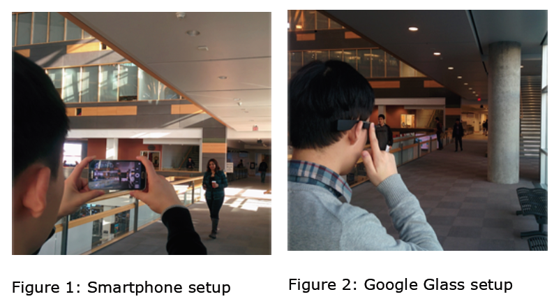
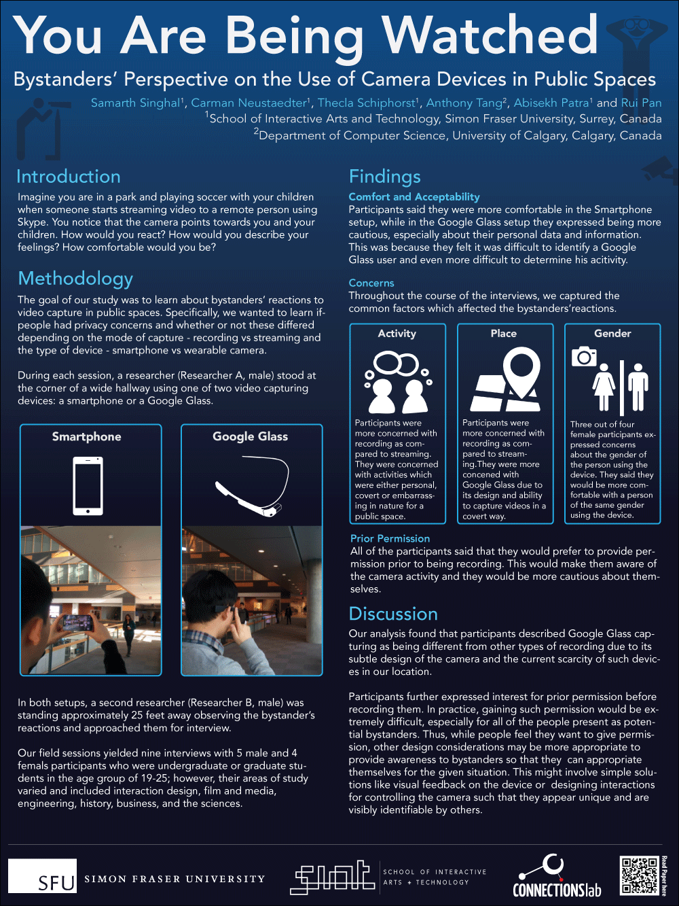

You Are Being Watched: Bystanders’ Perspective on the Use of Camera Devices in Public Spaces

Description
A qualitative analysis of an in situ interview study focused on bystanders’ reactions and feelings towards streaming and recording videos with smartphones and wearable glasses in public settings. Our analysis of interview data revealed that participants react differently to wearable cameras like Google Glass and perceive differences between recording and streaming in relation to privacy.
Methodology
Grounded Theory
In-situ Interviews
Observation
Collaborators
Carman Neustaedter
Thecla Schiphorst
Anthony Tang
Abhisekh Patra
Rui Pan
Publication:
Samarth Singhal, Carman Neustaedter, Thecla Schiphorst, Anthony Tang, Abhisekh Patra, Rui Pan 2016. You are Being Watched: Bystanders’ Perspective on the Use of Camera Devices in Public Spaces, Proceedings of the ACM Conference on Computer Human Interaction.
Samarth Singhal, Carman Neustaedter, Thecla Schiphorst, Anthony Tang, Abhisekh Patra, Rui Pan 2016. You are Being Watched: Bystanders’ Perspective on the Use of Camera Devices in Public Spaces, Proceedings of the ACM Conference on Computer Human Interaction.
CHALLENGE
Scenario: Imagine you are in a park and playing soccer with your children when someone starts streaming video to a remote person using Skype. You notice that the camera sometimes points towards you and your children who are all now bystanders in the video. How would you react? How would you describe your feelings? How comfortable would you be? This type of situation has the potential to grow increasingly common in society with the proliferation of mobile devices with embedded cameras. It could easily happen in a variety of public locations.
Previous research has focused on the relationship between recording and privacy only and does not cover reactions to streaming videos. Moreover, there is a need for more research into how capturing modes (recording vs. streaming) can affect privacy and how wearable camera devices differ from smartphone camera devices.
PROCESS
The goal of our study was to learn about bystanders’ reactions to video capture in public spaces. Specifically, we wanted to learn if people had privacy concerns and whether or not these differed depending on the mode of capture—recording vs. streaming—and the type of device—smartphone vs. wearable camera.Study Setup
Five field sessions were held at our university campus. These sessions were conducted in different areas of the campus over the course of two weeks and ranged in duration from 40-70 minutes each. The field sessions took place at different times of day and on different days of the week, including weekends. During each session, a researcher (Researcher A, male) stood at the corner of a wide hallway using one of two video capturing devices: a smartphone or Google Glass.

OUTCOME
Initial Behavior: Our observations of participants showed that they reacted more towards the Smartphone setup as compared to Google Glass because none of them noticed the Google Glass user.Capture Mode (Stream v/s Record): Participants in the Smartphone setup thought that Researcher A was recording video. However, in the Google Glass setup, 3 of 4 participants were uncertain about it.
Comfort and Acceptability: Participants said they were more comfortable in the Smartphone setup, while in the Google Glass setup they expressed being more cautious, especially about their data and information.
Concerns: Their concerns were more in Google Glass as compared to Smartphone setup for their Activity, Place, and Gender.
Prior Permission: All of the participants said that they would prefer to provide permission prior to being recording. They expressed less desire for prior permission in the case of streamed videos.
Poster at CHI 2016:

{kind=link}